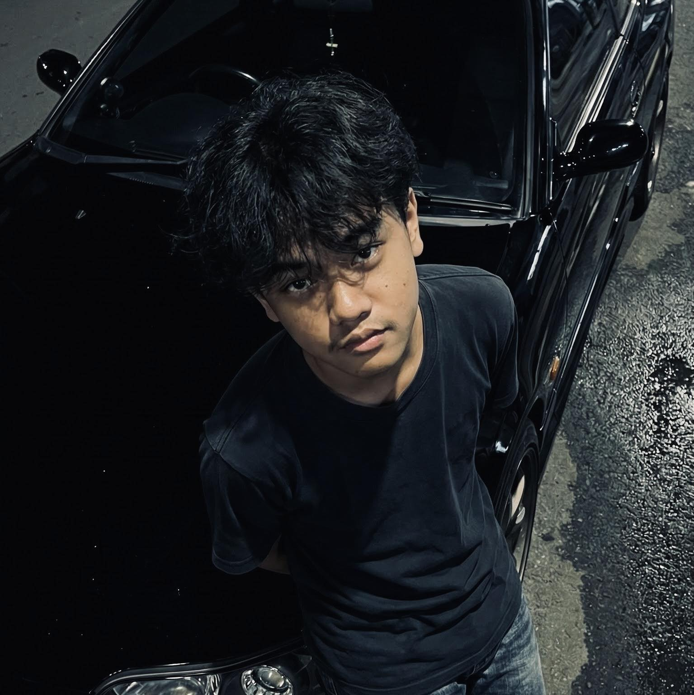

Mahasiswa S1 Fakultas Filsafat Universitas Gadjah Mada yang memadukan pemikiran analitis dengan kreativitas visual. Memiliki keahlian dalam video editing dan motion graphics, dengan spesialisasi pada sinkronisasi audio-visual (beat sync) menggunakan Adobe After Effects.
Lihat Karya SayaProgram Studi S1 Filsafat | 2025 - Sekarang
Jurusan Ilmu Pengetahuan Alam | 2022 - 2025
Menjadi Staf Divisi DDD (Dekor, Desain, Dokumentasi)
Menjadi Staf Divisi Logistik
Milad SMA Muhammadiyah 2 Yogyakarta
Berhasil mengedukasi audiens melalui video tutorial teknis After Effects (fokus pada 3D Motion & Advanced Transitions) di YouTube, mencapai 23.000+ views.